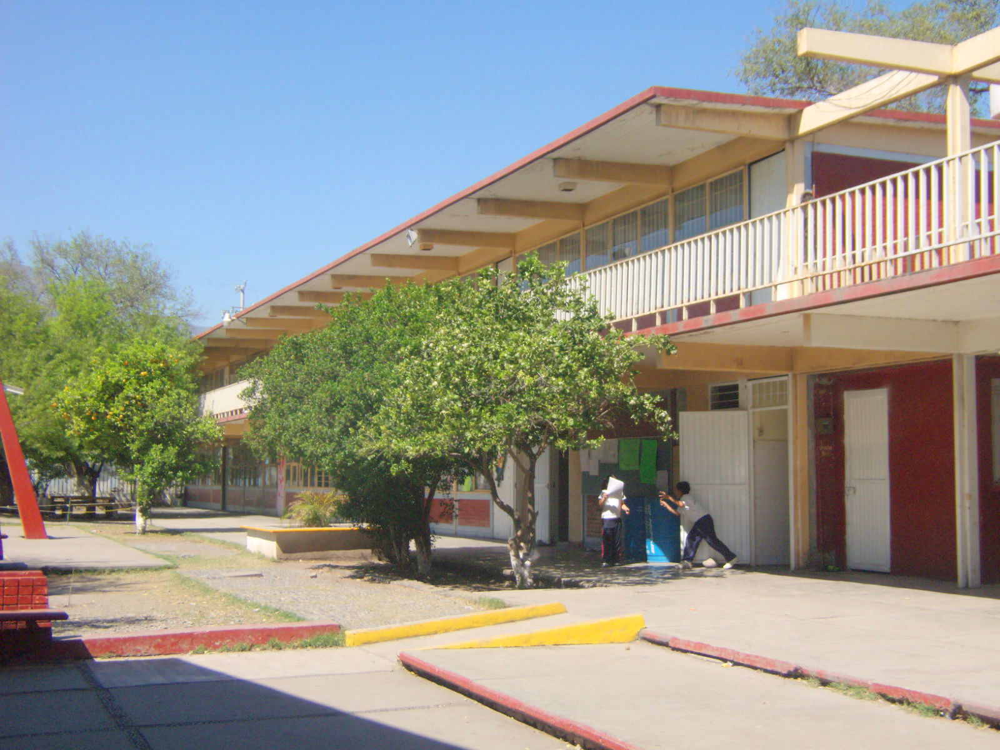
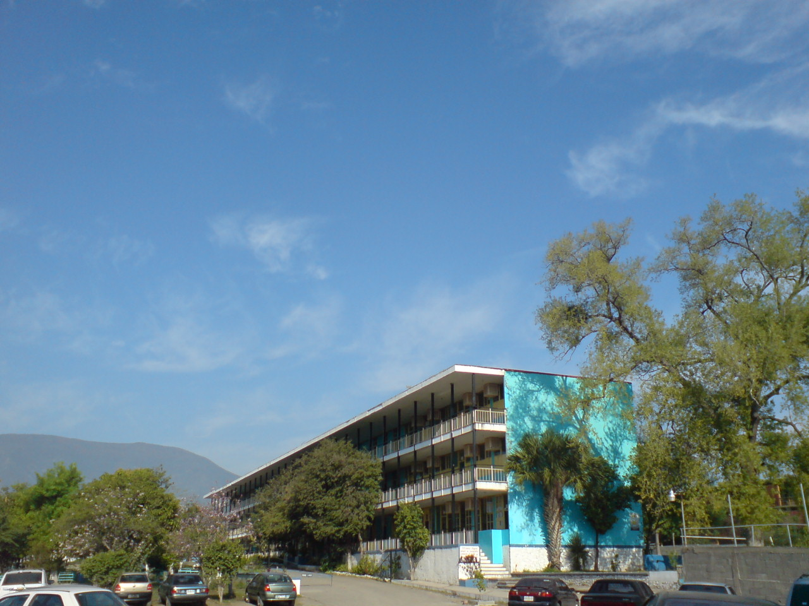
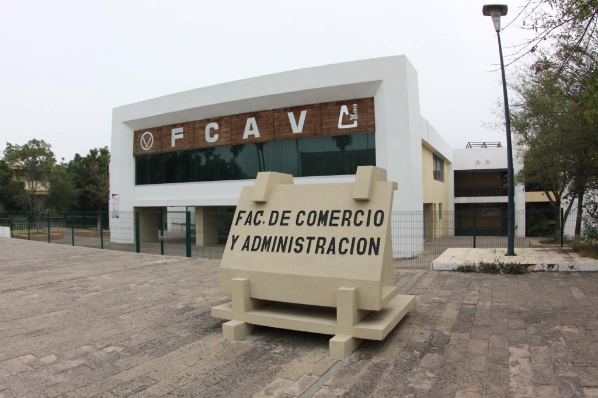

Trayectiria Academica
Inicio mi Trayectoria en la primaria Redencion del Proletariado Generacion 2011 a 2017
Segui mi trayectoria en la Secundaria Federalizada No. 1 "Dr. Norberto Treviño Zapata". Generacion 2017 a 2023
Tome mi educacion media superior en el Centro de Bachillerato Tecnologico Industrial y de Servicios Num. 24 Generacion 2020 a 2023

Y ahora curso el 5 semeste de la carrera de Licenciado en Tecnologias de la Informacion.
